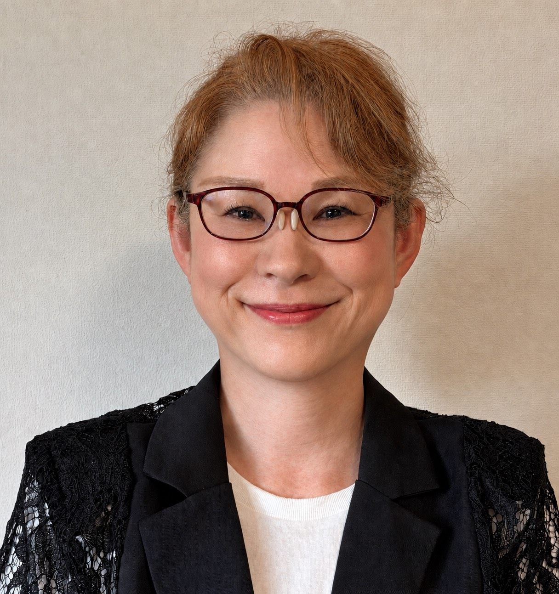

ABOUT ONLYYUUKA
ストーリー
増田 友美 / リメイクアーティスト
onlyyuukaは、増田友美が手がけるリメイク商品のブランドです。自ら選んだ帯や着物地、デニムなどを使って、バッグや小物を制作しています。
黒帯と着物地を合わせたセット。異なる色柄の布に刺し子を施したバッグインバッグ。どの素材をどこに使うか、その選び方が商品ごとの表情になります。
onlyyuukaの出発点には、帯や着物、着られなくなった衣類に残る柄や風合いを、もう一度使えるものにしたいという思いがあります。
帯の織りを表に見せたり、着物地を内布に使ったり。素材の特徴を見ながら、使う場所や組み合わせを考え、バッグや小物に仕立てています。
気に入った柄や色の組み合わせを、持ち歩いて楽しんでもらえるように。素材のよさを活かし、使いたくなる商品を目指しています。